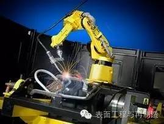

昌和自动化设备有限公司
18125023620
235468338@qq.com
发布日期：2016-08-16；作者:激光网
激光焊接工艺在汽车制造业、铝合金和镁合金材料的焊接、塑料加工业、船舶制造业等领域都有着十分重要的地位，是一门高度综合性的技术，能够显著提升产业效率和产品、服务质量。在这个背景下，研究激光焊接工艺的现状分析与进展的诸多问题，具有重要的现实意义。
1 .概述激光焊接工艺激光焊接工艺是一种现代焊接方法。 与传统的焊接方法相比较，激光焊接拥有众多特点，比如被焊接的工件变形情况较小，焊接的深度和宽度都较高，热影响区域较小等。除此之外，激光焊接工艺不会受到磁场的影响， 不会完全局限于导电材料和真空的工作环境，而且在工作的过程中也不会大量产生X射线。也正因为上述优势，激光焊接工艺在工业各个领域内的应用较为广泛。近些年来，制造部门渐渐将自动化技术应用到焊接的整个过程中去，只有将激光和计算机控制进行整合，实现有机结合，才能实现焊接过程的更好、更精确地控制，实现产品质量的提升。焊接产品质量的提升要求激光焊接过程监测和质量控制水平的提升，这也已经成为激光利用领域内的关键日程之一，其中，电感、声波、电容、光电等各种类型的传感器的利用是其中的核心内容。除此之外，利用电子计算机开展处理工作，根据焊接对象和要求的不同分别进行焊缝跟踪、缺陷检测等项目的处理，利用反馈控制实现焊接工艺参数的调节，最终实现激光焊接的完全自动化。

2.激光焊接工艺的应用现状与传统的焊接工艺相比，激光焊接工艺能够有效实现多种材料的“无缝”焊接，成为传统焊接工艺的补充和扩展。从我国目前的焊接实践来看，激光焊接工艺已经成为这个领域的中流砥柱。
2.1 激光焊接工艺在电子元件领域内的运用在传统的焊接工艺下，焊接面会存在过高的温度和辐射，这种情况会损坏电子元件本身，造成电子元件断裂或者接触不良等，影响其周围的环境。虽然这些不利影响能够通过相关手段解决，但是这也无疑会对电子元件的使用寿命产生缩短的影响，甚至影响后续的正常工作。从我国目前的焊接实践来看，激光焊接已经被广泛运用至电子元件的焊接领域。因为激光焊接工艺拥有可以开展局部微小范围内加热的优良特性，而且还能够做到准确控制电子元件焊接部位的局部温度。通俗一点说，就是激光焊接工艺能够实现在微小领域产生较高平均温度，而且不会对周边的区域产生不利影响的理想状态。
2.2 激光焊接工艺在铝合金材料焊接中的运用激光焊接工艺在汽车制造业的铝合金材料焊接中的运用也较为广泛。在对汽车相关器件进行焊接的过程中，侧吹保护气体的方式是最为常用的一种焊接方式，能够实现车用镀锌板的全方位保护。从我国目前的汽车制造业发展实践来看，铝合金是一种较为普遍的工业材料，能够起到车体防腐和减轻车重的作用。所以，在发动机、轮圈、仪表盘等众多方面，铝合金材料都有非常广泛的运用。激光焊接工艺在铝合金材料的焊接方面有着得天独厚的优势，因为其能够实现铝合金材料的高效保护。然而，在铝合金焊接实践中运用激光焊接工艺也存在着一定的弊端，这也是由铝合金自身的热力性能决定的。这种特性虽然能够实现铝合金元件的有效保护，但是却无法有效避免熔池飞溅、小孔塌陷等焊接过程中常发现象。
2.3 激光焊接工艺在镁合金材料焊接中的运用汽车制造业在近几年得到了飞跃式发展，汽车零部件的制作材料逐渐从铝合金过渡为镁合金。比起铝合金的汽车零部件，镁合金具有分量轻的特点，而且刚性、强度、导电性、导热性等性能都有了一定的提升和优化。除此之外，镁合金能够实现循环利用，回收利用的效果较好，经济成本较低。激光焊接工艺在镁合金材料的焊接过程中能够在器件的焊接局部产生一种氧化膜，实现镁合金器件的高效保护。不光是在汽车制造领域，航空航天领域内镁合金的广泛运用也使激光焊接工艺成为主流焊接技术，因为其能够满足航空航天利用的机器器件生产和制造的复杂要求，还能够有效减少飞机的自重。
3. 激光焊接工艺的研究进展不管是从国内还是从国外的激光焊接实践状况来说，未来的激光焊接技术的研究重点集中于以下三个方面：首先，是焊接过程的有效控制。其次，是激光器的研发和升级。最后，是焊缝缺陷的动态监测方面。在第二个方面中，提升电光转换效率是激光器研发和升级方面的核心内容，因为我国目前的激光器结构仍然十分复杂，如何实现激光器内部结构和外部性能的完善和升级是当下的重要任务之一。在第三个方面中，因为单一的传感技术不能满足众多复杂检验任务的要求，所以在未来，需要进一步发展焊接过程中的监控技术，力图将多种形式的传感技术充分结合起来，不断提升检测任务的精确度。
4. 总结激光焊接工艺的深入发展能够促进国内焊接技术的发展成熟。从我国目前的材料焊接实践来看， 激光焊接工艺主要在大批量生产、承办大规模焊接的企业以及航空航天等受到国家财政支持的项目中运用，并没有得到真正意义上的大范围、广领域普及。相关领域的工作和研究人员要致力于激光焊接工艺的优化和完善工作，使其充分发挥优势， 克服缺陷， 为产品质量和生产效率的提升做出更大贡献。
wwww.chzdh.net
18125023620
235468338@qq.com